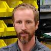

Dylan McNamara, Ph.D. - CV
Research Interests
Dylan McNamara is interested in the dynamics of coupled human-environmental systems, complex adaptive systems theory, and nonlinear data forecasting. Research in these areas has been supported by NSF, NOAA, and the Gordon and Betty Moore Foundation.
Education
- 2006 - PhD Oceanography - Scripps Institution of Oceanography/UCSD
- 1999 - MS Physics - San Diego State University
- 1996 - BS Physics - Salisbury University
Kenneth Ells, Ph.D.
Research Scientist
CASL Alumni
- John Holloway - MS Marine Science 2018, BS Physics with Honors 2016
- Matt Fair - BS with Honors Physics 2018
- Nick Sterling - BS with Honors Physics 2018
- Nicholas Rupp - MS Data Science 2018
- Nick Cortale - MS Marine Science 2015, CASL Research Tech 2015-2017
- Marc Brittain - BS Physics 2017
- Jon Whitley - MS Geology 2017
- Cobi Christiansen - MS Marine Science 2015
- Andrew Whitley - MS Marine Science 2014
- Derek Grimes - BS with Honors Physics 2014
- Kurt Baker - BS with Honors Physics 2013
- Zachary Wiliams - MS Marine Science 2012, BS Physics with Honors 2010
- Iain Joseph - BS Physics with Honors 2011
- Chelsea Hopkins - BS Physics with Honors 2012